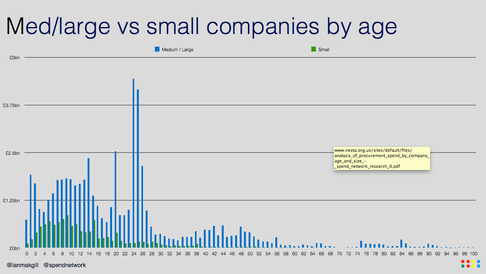
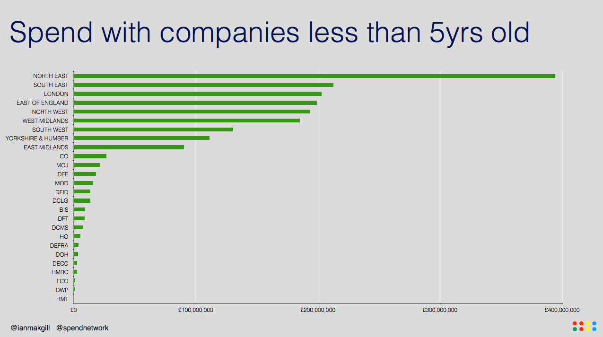
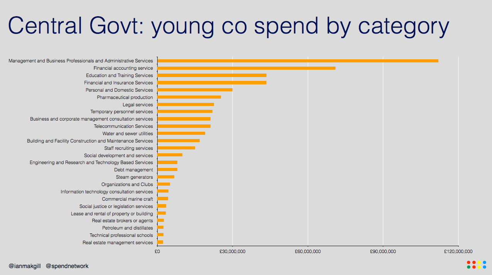

Open data reveals less than 3% of government procurement spend goes to startups
Tom Symons, Principal Researcher at Nesta, examines Spend Network's research on young firms' access to government contract spending
From the Northern Powerhouse to central government IT, there have been calls for more public contracts to go to small startup companies to drive innovation and economic growth. But new analysis by Spend Network, an open data business on the ODI’s Startup programme, suggests that traditional procurement processes might be doing the opposite and excluding new firms from government contracts.
Their analysis has revealed the difficulty of doing business with government as a small, young company. They looked at three years' worth of procurement transactions from central and local government, finding a total spend of £68 billion with identifiable suppliers. Of this spend, just £1.8 billion – 2.7% – went to new startup companies (defined as companies less than five years old and a turnover of less than £2 million).
Spend Network analysed published transactions with government above the threshold value – £500 for local government and £25,000 for central government* – between 2012 and 2014. The analysis looked at over 50 million rows of data from three years' worth of procurement transactions, gathered from over 200 central and local government bodies. The analysis looked at the age and size of the companies winning the work.
Spend Network’s analysis indicates the difficulty that small, young companies in particular can have trying to access government contracts. We can see in the data that younger companies manage to pick up a decent chunk of work if they are medium to large sized – around 9% of the total. (Notwithstanding that this could be because some of them are new subsidiaries of existing companies, often created for specific contracts.)

Recent government approaches to improving access for startups to government work
There has been a much needed focus in recent years on government using its buying power as a way to shape and grow the economy. In particular, there have been efforts to increase the percentage of government procurement spend that goes to small and medium-sized enterprises (SMEs).
More recently, the prospects of the ‘Northern Powerhouse’ have been linked to the need to reform procurement processes so that they give SMEs a better chance of winning government contracts. For instance, the Leader of Cheshire East Council, Cllr. Michael Jones, has said that traditional procurement can constrain the growth of SMEs and risks them being undermined by larger contractors.
The coalition government made some positive progress on this front, abolishing PQQs for small contracts, creating a single portal for all procurements (Contracts Finder), and ensuring that invoices must be paid within 30 days.
But while spend on SMEs has increased from 6.5% in 2010 to over 25% in 2015, Spend Network’s analysis shows that spend on startups remains low. Many of the government’s reforms are potentially too recent to have an impact that would show up in the data, but as Lord Young’s Report on Small Firms urges, we also need to go further in increasing transparency, having more pre-procurement engagement and continuing the drive to reduce the number of large contracts, which are only viable for large companies.

Why does this matter?
It’s important mainly because of the major role that startups play in job creation, growth and innovation. For instance, research has found that startups are responsible for over 40% of all new jobs (across 18 OECD countries). Small firms are likely to be more innovative than larger, established firms. Market incumbents – with a few notable exceptions – almost always miss ‘the next big thing’, while new companies are more likely to take risks, experiment, pursue new technologies and develop disruptive innovations. They also increase market competition, which improves productivity and drives innovation in other firms. By buying from predominantly older, larger firms, government takes the risk that they too will miss out on new approaches that might deliver efficiencies or better outcomes for citizens.
For office stationery orders, this is not a huge problem. But when it comes to working with organisations to deal with complex social problems, or improving the government’s IT capacity, the risk of missing out on innovation is a more relevant concern.

The biggest challenge seems to be in the first two years for a small company. These companies win less than half a percent of the £68 billion of public spend that Spend Network analysed. There are a number of possible explanations. The time-lag between a tender going live and eventual payment could be too long from a cash-flow perspective for young companies. We are one of the slowest countries in Europe on this front, and young companies without high turnovers find this lag difficult to manage. To compound this, the National Audit Office reports that the public sector takes 30 days or more to pay small suppliers one third of the time. It’s also possible that the standard request for three years of audited accounts, or for a minimum company turn-over, in many public procurements automatically excludes new companies, particularly if they are not subsidiaries. It could also be that small, young companies lack confidence to bid for government work until they are more established.
Some sectors also appear particularly difficult for startups. The Ministry of Defence (MOD), despite its huge procurement budget, spends comparatively little on young companies. This is understandable: it requires enormous investment to be able to meet the requirements of a defence buyer. The problem is that this makes it very difficult for the MOD to innovate in the supply chain, and creates a dependency on existing firms.
So what can the government do about this to support startups more? Despite the headline findings, there are some encouraging signs in the data, and in new approaches to procurement.
Collaborative approaches to local economic develop can champion small firms and startups
The North East has a historically strong track record of supporting young companies. Between 2012 and 2014, Spend Network analysis shows them spending close to double that of any other region on new businesses. It is possible this is because of a procurement partnership between local authorities in the North East, focusing on collaborative economic development and local businesses. The North East Procurement Organisation has for close to 40 years been focused on supporting the local economy as well as achieving efficiencies for local authorities. This collaborative approach to economic development seems to help startups, and is a model that might be a useful reference point as the government grows the Northern Powerhouses.
Procurement platforms and exchanges can make government work more accessible for small firms
The professional service sectors – such as financial services, IT or management consultancy – seem to be a promising area for new companies working with government. These companies are the top young spend area for central government and third highest spend area across local government. It’s possible that these sectors are more accessible for small, new companies because individuals are able to take the knowledge, networks and contacts developed when working for corporates (or even in government), and to use this to trade successfully as a new company.
Some of this work may also be the beneficiary of some new approaches to purchasing that centre on the use of procurement platforms and exchanges. These offer a more accessible market for small firms, such at the government’s G-Cloud. Launched in 2012, this is an catalogue service that enables government buyers to purchase cloud-based IT services. The rationale for G-Cloud was to reduce the use of big, expensive government IT contracts, 80% of which went to just five firms. G-Cloud can be used by central government, local authorities, non-departmental public bodies and other bits of the public sector. The simple, flexible and transparent exchange features of the G-Cloud also make it easier for SMEs to win work, as well as being cheaper for purchasers (savings are estimated to be around 50% of what was previously being spent). So far, just under 50% of the work through the G-Cloud has gone to SMEs.
Alternative procurement approaches can help to widen access to small firms
Faced with persistently difficult social problems, governments are increasingly looking at innovations in procurement as a means of getting better outcomes. Governments such as Philadelphia and Barcelona, have been experimenting with problem-based procurements and business accelerators as a means of opening up government contracts to a wider selection of companies. These are used to generate new solutions to difficult government problems, in recognition of the challenges associated with traditional procurements, which can place too much emphasis on specification of solutions before ideas have been properly tested and adapted in real-life settings. At the same time, they also help to widen access to startups, for whom the invitation to submit ideas about solutions is more attractive and accessible than a highly specified delivery contract.
If we are to support innovation inside and outside of government, we need to be conscious of the barriers that can exist for new companies trying to work with government. Many of these are likely to be a product of traditional procurement practices that often seek out big, lengthy contracts. While these can be suitable for some procurements, as the G-Cloud and problem-based procurements show, there is also merit in alternative approaches to procurement that help widen markets, reduce cost and produce better outcomes. It might also help us to bring in more startups to work with government, and unlock some much needed innovation.
*Note: Six Central Government Departments publish spending below the £25,000 threshold.
Tom Symons is principal researcher at Nesta
This post was originally published by Nesta, re-published with thanks. Spend Network's research was grant funded by Nesta